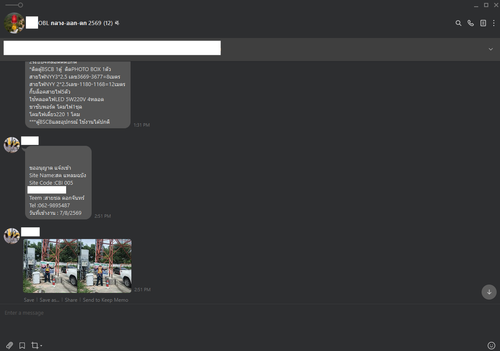
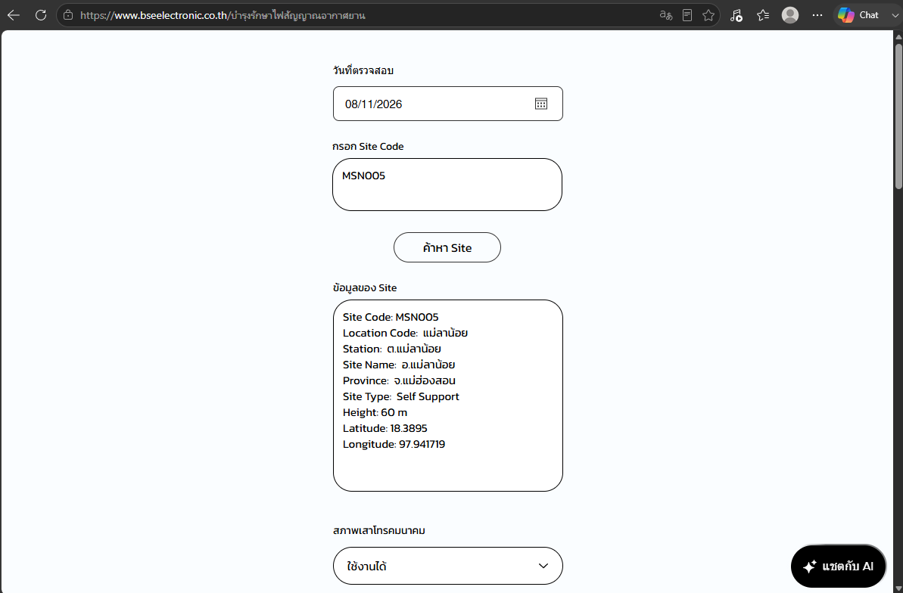
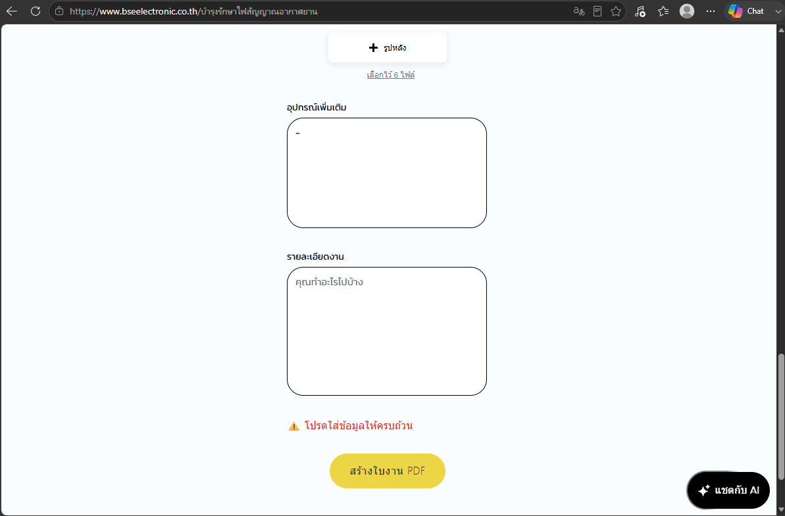

Duplicate
Data Entry
Contractors entered information in LINE, then office staff entered essentially the same information again into formal documents.
007 — FIELD OPERATIONS / WORKFLOW SYSTEM
A digital field maintenance workflow designed to standardize site reporting, reduce duplicate administrative work, and generate structured maintenance documentation across approximately 1,800 sites.
One structured workflow from field maintenance data to completed documentation.
01 / OPERATIONAL CONTEXT
Aviation obstruction light maintenance is performed
across approximately 1,800 sites.
Previously, field contractors reported completed work
through LINE — manually typing site codes, equipment
information, models, maintenance details and remarks,
while sending supporting photos separately.
At this scale, even a small repetitive administrative step becomes a significant operational workload.
02 / THE OLD WORKFLOW

Field information and photo evidence were sent through chat messages. Office staff then had to interpret, organize and re-enter the information into formal maintenance documentation.
FIELD → LINE → OFFICE → DOCUMENTContractors entered information in LINE, then office staff entered essentially the same information again into formal documents.
Site codes, equipment names and model numbers were entered as free text, increasing the chance of mismatched or incomplete information.
Maintenance photos had to be downloaded, matched with the correct site and inserted into reports manually.
03 / THE SOLUTION
I designed a browser-based workflow that allows contractors to complete structured maintenance information directly from the field.
Site information, equipment details, model numbers, work performed, remarks and photo evidence are collected in one workflow and reviewed before submission.
This removes the need for office staff to rebuild the same maintenance report from LINE conversations.

04 / THE NEW WORKFLOW
Maintenance information is entered once at the source, kept in a structured format, reviewed together with photo evidence, and prepared for documentation without requiring a second round of manual data entry.
05 / DATA STANDARDIZATION
Standardized maintenance visit date.
A consistent identifier for each maintenance location.
Equipment information recorded in a structured format.
Model information linked with the reported equipment.
Work performed and relevant field notes.
Photo evidence stored together with the maintenance record.
06 / DOCUMENT WORKFLOW
Contractor completes structured information.
Site and equipment information stay standardized.
Images remain connected to the correct maintenance work.
Information collected during the maintenance visit is organized into a consistent report together with the relevant site, equipment, work details and photo evidence.
Instead of rebuilding the document from LINE messages, the reporting workflow starts directly from structured field data.
Information is ready for formal documentation.
07 / BUILT-IN REVIEW
Because the contractor completes the maintenance information directly, the reporting workflow also becomes an opportunity to review the work before submission.
Instead of information being scattered across multiple LINE messages, the relevant maintenance record can be checked as one complete set.
Site information, equipment details, maintenance actions and photo evidence are reviewed together before submission.
This creates a built-in verification step and reduces the chance of incomplete or mismatched reporting.

08 / DEVELOPMENT
Mapped the existing LINE-to-office workflow and removed unnecessary handoffs and repeated information entry.
Structured the form around the information contractors already need while performing maintenance at each site.
Custom interaction logic was developed using Wix Velo and JavaScript within the company's existing website environment.
09 / OUTCOME
Maintenance information is entered once at the source instead of being retyped by office staff.
Site, equipment and model information follow a structured format rather than free-text LINE messages.
The workflow is designed so contractors can complete the reporting process without requiring office staff to reconstruct the same information.
Maintenance details and photo evidence can be reviewed together before submission.
10 / SCALE & NEXT ITERATION
At this operational scale, reducing even one repetitive administrative step per site can create meaningful workflow impact.
Transform field reporting from a repetitive communication task into structured operational data that can support maintenance history, equipment analysis and future decision-making.